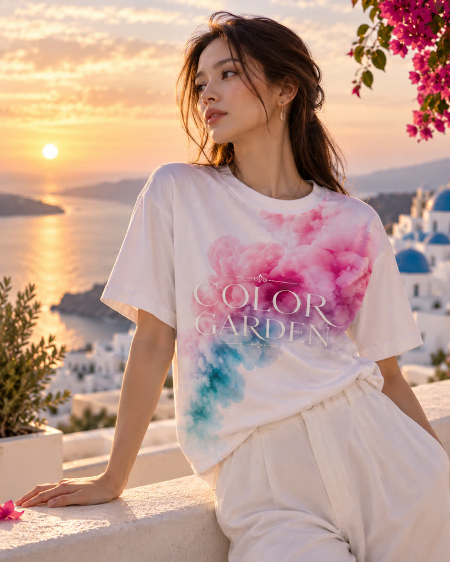
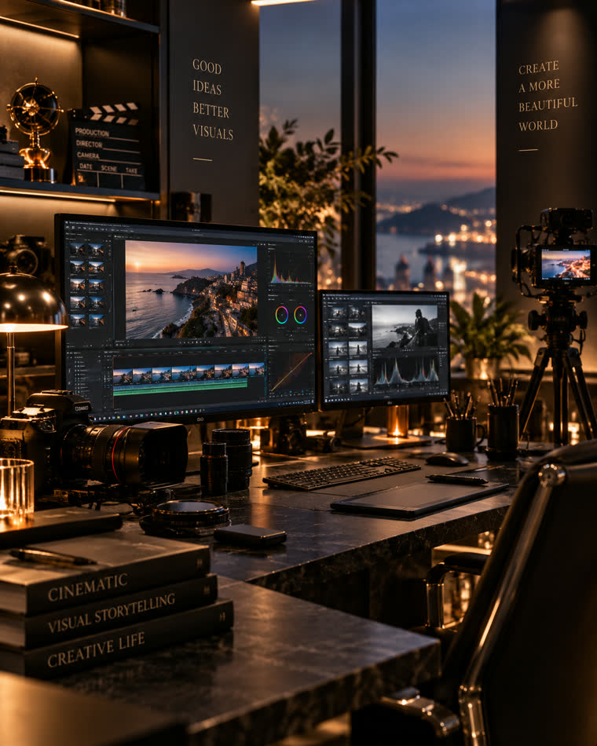

Luxury Travel · Original Sound · Creative Life
美しい景色を歩き、心を動かす音に耳を澄まし、
日々の暮らしに彩りを添える。
Explore Our World


About Color Garden
COLOR GARDENは、旅・音楽・ものづくりを通じて、日常に小さな感動をもたらすライフスタイルブランドです。美しい景色に心を動かされる瞬間、耳に残る一節の旋律、丁寧に作られたプロダクト——そのひとつひとつが、あなたの毎日に新しい彩りを加えていきます。
OUR STORY